[6-4] PWM驱动LED呼吸灯 / PWM驱动舵机 / PWM驱动直流电机 — 学习笔记
- 课程：江协科技《STM32入门教程-2023版 细致讲解 中文字幕》
- 视频：BV1th411z7sn?p=16，1:04:25（3864.6 秒）
- 素材：258 帧关键帧（每 15 秒，宽 1280px）+ PP-OCRv4 画面硬字幕 OCR（902 段）；关键截图 20 张随笔记收录（源图在
vidsum_out/stm32_p16/frames/，站内图片在assets/images/stm32-16/） - 字幕情况：该集 B 站没有 CC/AI 字幕，文本由画面烧录的中文字幕 OCR 得到（source=subtitle-ocr）；本集字幕被 Keil 的 Build Output（
0 Error(s), 0 Warning(s)反复刷屏）和示波器读数（Vmin/Vmax/Vpp/F=）严重污染，这些行不是老师口述内容，已剔除，错字已按画面校正（清单见文末「存疑」）。 - 本集定位：这是 [6-3] 输出比较/PWM 的代码课——理论（输出比较原理、8 种模式、三个公式、舵机 20ms、TB6612 真值表）全部在上一集 P15，本集不重复推导，只套公式 + 写代码 + 示波器验证 + 看现象。全片是三个独立工程依次从零改出来：①
6-3 PWM驱动LED呼吸灯、②6-4 PWM驱动舵机、③6-5 PWM驱动直流电机（这三个正是 P15 片头演示的现成工程），最后还有一段重映射扩展（PA0 → PA15，是程序一的延伸，不是独立程序）。
一句话结论
本集把 [6-3] 的 PWM 理论落成一套可复用的模板：先用五步想清楚——① 选时钟源（TIM_InternalClockConfig）→ ② 配时基单元（PSC 定频率、ARR 定周期/分辨率）→ ③ 配输出比较单元（TIM_OCxInit，TIM_OCMode_PWM1、TIM_OCPolarity_High、TIM_OutputState_Enable、TIM_Pulse = CCR 初值）→ ④ 把通道对应的 GPIO 配成 GPIO_Mode_AF_PP（复用推挽，把引脚控制权从 ODR 交给片上外设，否则定时器驱动不了引脚）→ ⑤ TIM_Cmd 启动计数器；然后换程序只改三样东西：引脚（GPIO_Pin_x）、通道函数（TIM_OCxInit / PWM_SetComparex）、频率参数（PSC/ARR）。三个工程的参数分别是：① 呼吸灯 = TIM2_CH1 / PA0，PSC=720-1、ARR=100-1 → 72M/720/100 = 1kHz，CCR=50 → 50%，分辨率 1/(ARR+1)=1%（正好是 P15 结尾那道题），示波器实测周期 1ms、F=1.000kHz，再把 CCR 交给 PWM_SetCompare1 用两个 for 循环 0→100→0 就得到呼吸灯；② 舵机 = TIM2_CH2 / PA1，PSC=72-1、ARR=20000-1 → 72M/72/20000 = 50Hz（20ms），于是 CCR 500～2500 恰好就是 0.5～2.5ms，Servo_SetAngle(Angle) 用 Angle/180*2000+500 把 0°～180° 线性映射成 500～2500 写进 CCR，按键每次 +30°；③ 直流电机 = TIM2_CH3 / PA2 输出 PWM，TB6612 的 AIN1/AIN2 接 PA4/PA5 管方向，Motor_SetSpeed(Speed)（-100～100）里按正负决定两个方向脚谁高谁低、再把 |Speed| 写进 CCR，实测发现 1kHz 会让电机发出「蜂鸣器」声（线圈在 PWM 下振动），于是减小预分频**把 PSC 从 720-1 改成 36-1，频率升到 72M/36/100 = 20kHz、超出人耳范围，声音就没了。另外重映射那段要记三条：开 AFIO 时钟 + GPIO_PartialRemap1_TIM2 + GPIO_Remap_SWJ_JTAGDisable（保留 SWD，千万别用 SWJ_Disable），再把 GPIO_Pin_0 改成 GPIO_Pin_15。
0. 本集定位：代码课，理论全部在 [6-3]
- 本集是纯代码课：全程 Keil µVision 窗口，复制工程 → 新建模块 → 写
.c/.h→ 编译下载 → 示波器/实物看现象；没有新的理论章节：唯一一次翻 PPT 讲五步流程是 02:44，后面算公式（17:11、20:59）和讲同一定时器多通道（39:25、41:38）又调出过 PPT；翻手册是为了查引脚定义表与重映射表（17:39、30:04）。 - 三个工程与上一集的对应关系：P15 片头演示的三个现成工程（
6-3 PWM驱动LED呼吸灯/6-4 PWM驱动舵机/6-5 PWM驱动直流电机）在这一集被逐个真正写出来，证实了 P15 片尾「下一小节学习 PWM 的代码部分」的预告。 - 理论引用 P15 即可：输出比较原理、8 种输出模式、图125 通道电路、三公式（
Freq = CK_PSC/(PSC+1)/(ARR+1)、Duty = CCR/(ARR+1)、Reso = 1/(ARR+1)）、舵机 20ms/0.5～2.5ms 的要求、TB6612 真值表，本笔记不再推导，只在用到时写「代公式」，详细推导看notes/stm32-15-输出比较.md。 - 注意编号：本集视频是 [6-4]，而里面三个工程目录叫
6-3/6-4/6-5（作者按「代码小节」编号），两套编号不是一回事——P15 存疑里「素材目录号与本视频小节号不是同一套」那一条（P15 第 3 条）到这里就解释清楚了。 - 片头没有任何铺垫，第一句就是「我们接下来学习输出比较的代码部分」，接着直接「先看一下接线图」（00:05）。
1. 三个程序总览
| 程序 | 工程目录（复制自哪个工程） | 定时器通道 / 引脚 | PWM 频率 | PSC / ARR（最终值） |
CCR 的用途 | 外设 |
|---|---|---|---|---|---|---|
| ① LED 呼吸灯 | 6-3 PWM驱动LED呼吸灯（复制「OLED显示屏」工程） |
TIM2_CH1 / PA0 | 1kHz（周期 1ms） | 720 - 1 / 100 - 1 |
CCR 0～100 直接对应占空比 0%～100% |
LED（正极→PA0、负极→GND） |
| ② 舵机 | 6-4 PWM驱动舵机（复制程序一） |
TIM2_CH2 / PA1 | 50Hz（周期 20ms） | 72 - 1 / 20000 - 1 |
CCR 500～2500 对应 0.5～2.5ms、对应 0°～180° |
SG90 舵机 + PB1 按键 |
| ③ 直流电机 | 6-5 PWM驱动直流电机（复制程序一） |
TIM2_CH3 / PA2（另有 PA4/PA5 管方向） | 先 1kHz，最后 20kHz | 36 - 1 / 100 - 1（最终） |
CCR 0～100 对应速度 0～100 |
TB6612 驱动模块 + 130 直流电机 + PB1 按键 |
- 三个程序共用同一个定时器 TIM2，只是用了不同的通道（CH1/CH2/CH3），因此引脚分别是 PA0/PA1/PA2；频率和参数各按外设需要单独设。
- 三个程序的文件结构完全一样：
Hardware组下都有PWM.c/PWM.h（底层），程序二、三再分别加Servo.c/.h、Motor.c/.h（上层封装）。 - 三个程序的主函数都保留
OLED模块（片头复制工程时特意留着），用来显示变量（角度、速度），方便调试。
2. 程序一：PWM 驱动 LED 呼吸灯（00:00～36:33）
2.1 接线：LED 正极接 PA0、负极接 GND
- 打开接线图
6-3 PWM驱动LED呼吸灯.jpg：在 PA0 引脚上插一个 LED，准备在 PA0 上输出一个 PWM 波来驱动它、呈现出不同亮度。 - 注意接法：LED 正极接在 PA0 引脚、负极接在 GND——这是正极性驱动：高电平点亮、低电平熄灭，这样接观察更直观：占空比越大，LED 越亮；占空比越小，LED 就越暗。
- 面包板上也只需要拿出一个 LED，正极接 PA0、负极接 GND，其他什么都不用。
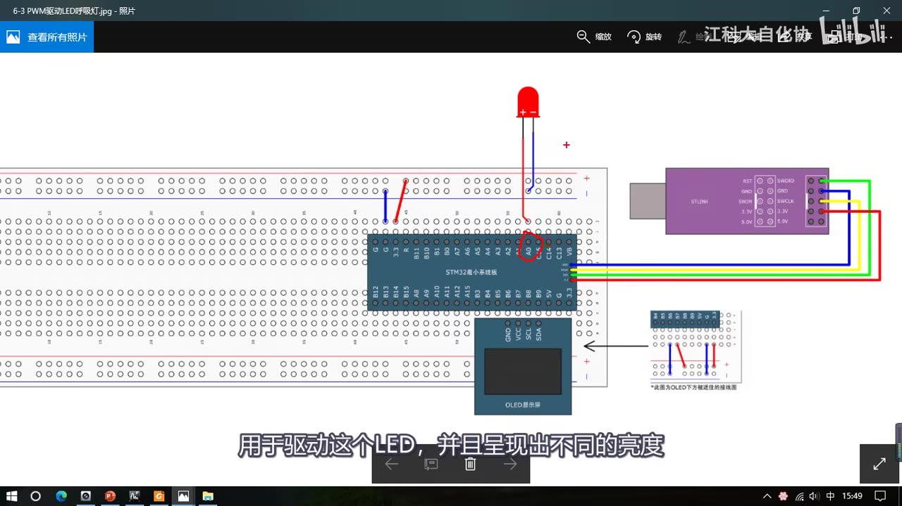
图 1：程序一接线图 6-3 PWM驱动LED呼吸灯——面包板上的 STM32 最小系统板 + ST-Link + OLED；LED 正极接 PA0、负极接 GND（正极性驱动：高电平点亮、占空比越大越亮）
2.2 复制工程、新建 PWM 模块
- 回到工程文件夹，复制「OLED显示屏」工程，改名
6-3 PWM驱动LED呼吸灯； - 把主函数里 OLED 的演示代码删掉——「我们这个工程暂时用不到 OLED」，但还是保留了 OLED 这个模块：「如果你想看一些变量，可以随时显示在这个 OLED 上，这样方便调试一些」；
- 先编译一下，
0 Error(s), 0 Warning(s)，没问题； - 在
Hardware文件夹右键 → Add New Item to Group 'Hardware'，新建PWM.c（Type = C File (.c)，Name =PWM，Location 自动落在<工程目录>\Hardware），再同样建PWM.h； PWM.h里写固定部分（#ifndef/#define/#endif），PWM.c里加#include "stm32f10x.h"，然后写一个PWM_Init初始化函数的框架。
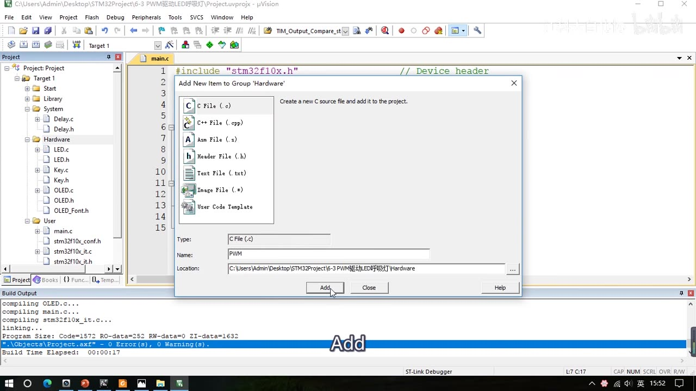
图 2：在 Hardware 组「Add New Item」新建 PWM 模块——Type 选 C File (.c)，Name 填 PWM，Location 是 ...\6-3 PWM驱动LED呼吸灯\Hardware
2.3 写代码前先理清五步流程
回到 PPT 的「PWM基本结构」图（理论见 P15）：上一小节已经把整个 PWM 通路讲完了，现在只需要把图里的模块逐个打通就能输出 PWM。具体五步：
| 步 | 做什么 | 对应库函数（本集用到的） |
|---|---|---|
| ① | 选择时钟源 | TIM_InternalClockConfig(TIM2) |
| ② | 配置时基单元（PSC / ARR） | TIM_TimeBaseInit(TIM2, &结构体) |
| ③ | 配置输出比较单元（模式/极性/使能/CCR） | TIM_OC1Init(TIM2, &结构体)，先 TIM_OCStructInit |
| ④ | 配置 GPIO 为复用推挽输出 | GPIO_Init(...)，模式 GPIO_Mode_AF_PP |
| ⑤ | 运行控制：启动计数器 | TIM_Cmd(TIM2, ENABLE) |
- 其中第②步的代码在 [6-2] 的「定时器定时中断」工程里已经写过，所以直接复制过来：开时钟、选内部时钟、初始化时基单元、最后启动定时器——这些都留着，只是更新中断不需要（输出 PWM 不用中断）。
2.4 库函数地图：输出比较相关的函数
写之前先扫了一遍 stm32f10x_tim.h，把和输出比较有关的函数过了一遍（大部分了解一下即可）：
| 函数 | 作用 | 本集是否用到 |
|---|---|---|
TIM_OC1Init ～ TIM_OC4Init |
配置输出比较单元（4 个通道各一个函数） | 用到 TIM_OC1Init |
TIM_OCStructInit |
给输出比较结构体赋默认值 | 用到 |
TIM_ForceOC1Config ～ OC4Config |
强制输出（强制高/低，等于 100%/0% 占空比） | 不用（视频：了解一下即可、不需要掌握） |
TIM_OC1PreloadConfig ～ OC4PreloadConfig |
配置 CCR 预装（影子寄存器） | 不用（一般不用） |
TIM_OC1FastConfig ～ OC4FastConfig |
配置快速使能 | 不用 |
TIM_ClearOC1Ref ～ OC4Ref |
清除 REF 信号 | 不用 |
TIM_OC1PolarityConfig / OC1NPolarityConfig … |
单独设置输出比较极性（带 N 的是互补通道，CH4 没有 OC4N） | 不用 |
TIM_CCxCmd / TIM_CCxNCmd |
单独修改输出使能 | 不用 |
TIM_SelectOCxM |
单独选择输出比较模式 | 不用 |
TIM_SetCompare1 ～ TIM_SetCompare4 |
单独修改 CCR 的值（运行中调占空比的核心函数） | 用到 TIM_SetCompare1 |
TIM_CtrlPWMOutputs |
仅高级定时器使用；高级定时器输出 PWM 时必须调用它使能输出，否则 PWM 不能正常输出（补充知识：本集视频没有讲，只在头文件函数清单里带过） | 不用（本集三个程序都是通用定时器 TIM2） |
2.5 PWM_Init 完整代码（程序一最终版）
#include "stm32f10x.h"
void PWM_Init(void)
{
/* 时钟：TIM2 在 APB1，GPIOA 在 APB2 */
RCC_APB1PeriphClockCmd(RCC_APB1Periph_TIM2, ENABLE);
RCC_APB2PeriphClockCmd(RCC_APB2Periph_GPIOA, ENABLE);
/* GPIO：复用推挽输出（引脚控制权交给片上外设） */
GPIO_InitTypeDef GPIO_InitStructure;
GPIO_InitStructure.GPIO_Mode = GPIO_Mode_AF_PP;
GPIO_InitStructure.GPIO_Pin = GPIO_Pin_0;
GPIO_InitStructure.GPIO_Speed = GPIO_Speed_50MHz;
GPIO_Init(GPIOA, &GPIO_InitStructure);
/* 时钟源：选内部时钟（默认就是内部时钟，写上更完整） */
TIM_InternalClockConfig(TIM2);
/* 时基单元：PSC 定频率、ARR 定周期 */
TIM_TimeBaseInitTypeDef TIM_TimeBaseInitStructure;
TIM_TimeBaseInitStructure.TIM_ClockDivision = TIM_CKD_DIV1;
TIM_TimeBaseInitStructure.TIM_CounterMode = TIM_CounterMode_Up;
TIM_TimeBaseInitStructure.TIM_Period = 100 - 1; // ARR
TIM_TimeBaseInitStructure.TIM_Prescaler = 720 - 1; // PSC
TIM_TimeBaseInitStructure.TIM_RepetitionCounter = 0; // 高级定时器才用
TIM_TimeBaseInit(TIM2, &TIM_TimeBaseInitStructure);
/* 输出比较单元：PWM模式1、高电平有效、使能输出、CCR 初值 50 */
TIM_OCInitTypeDef TIM_OCInitStructure;
TIM_OCStructInit(&TIM_OCInitStructure);
TIM_OCInitStructure.TIM_OCMode = TIM_OCMode_PWM1;
TIM_OCInitStructure.TIM_OCPolarity = TIM_OCPolarity_High;
TIM_OCInitStructure.TIM_OutputState = TIM_OutputState_Enable;
TIM_OCInitStructure.TIM_Pulse = 0; // CCR 初值（参数计算阶段曾用 50，27:00 后按口述改为 0）
TIM_OC1Init(TIM2, &TIM_OCInitStructure);
/* 运行控制：启动计数器 */
TIM_Cmd(TIM2, ENABLE);
}
几个要点（视频里都专门讲过）：
- 结构体成员先
TIM_OCStructInit赋默认值：作者遇到过一个怪问题——让高级定时器输出 4 路 PWM，初始化函数放在第一行就没问题，前面出现别的代码就只输出 3 路。「能不能输出 PWM，竟然和初始化函数在哪一行有关」——原因是没给结构体赋初值，成员值不确定。所以为了避免程序中出现不确定的因素，有用没用都先赋一遍默认值，再改自己想改的。 TIM_OCMode的可选值：TIM_OCMode_Timing（冻结）、_Active（相等时置有效）、_Inactive（相等时置无效）、_Toggle（相等时翻转）、TIM_OCMode_PWM1/_PWM2、以及_ForcedAction_Active/_Inactive（强制输出，初始化时不让用）。这里选TIM_OCMode_PWM1。TIM_OCPolarity：选TIM_OCPolarity_High——「有效电平是高电平，REF 有效时输出高电平，都是一个意思」。TIM_OutputState：Disable失能 /Enable使能，这里「肯定得使能」。TIM_Pulse就是 CCR 的值：它的注释写的是「指定的 Pulse 值会被加载到 Capture Compare Register」，也就是 CCR 捕获/比较寄存器；PSC 是预分频、ARR 是周期、CCR 是占空比，三者共同决定 PWM 的周期和占空比。- GPIO 为什么必须配
GPIO_Mode_AF_PP：普通的开漏/推挽输出，引脚的控制权来自输出数据寄存器（ODR）；而要让定时器来控制引脚，就必须用复用开漏/推挽输出，此时输出数据寄存器被断开、输出控制权转移给片上外设——而按引脚定义表，这个片上外设引脚连的正是 TIM2 的 CH1 通道。所以只有把 GPIO 设置成复用推挽输出，PWM 波形才能通过引脚输出。
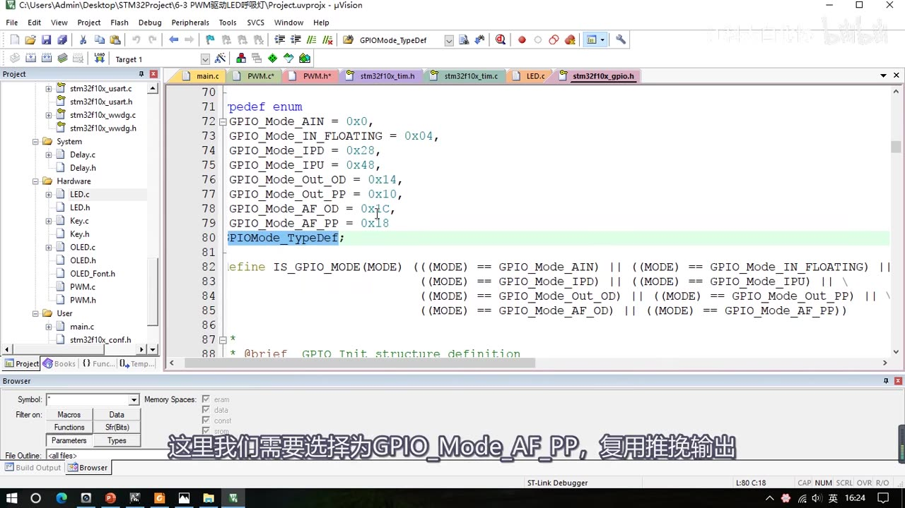
图 3：stm32f10x_gpio.h 里 GPIO_Mode_AF_PP = 0x18 高亮——复用推挽输出；字幕「这里我们需要选择为 GPIO_Mode_AF_PP，复用推挽输出」
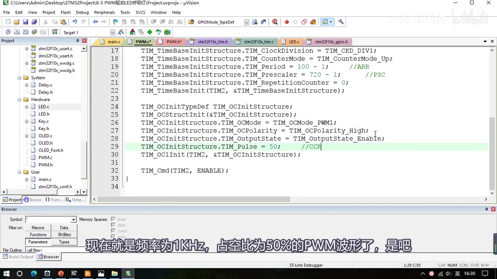
图 4：程序一 PWM.c 参数计算完成时（23:15，此时 TIM_Pulse = 50；27:00 后按口述改为 0）——TIM_Period = 100 - 1; //ARR、TIM_Prescaler = 720 - 1; //PSC、TIM_Pulse = 50; //CCR、TIM_OCMode_PWM1、TIM_OCPolarity_High、TIM_OutputState_Enable、TIM_OC1Init(TIM2, ...)、TIM_Cmd(TIM2, ENABLE)
2.6 参数推导：1kHz / 50% / 分辨率 1%
要求：频率 1kHz、占空比 50%、分辨率 1%（就是 P15 结尾留的那道练习题）。代入 P15 的三个公式：
72M / (PSC+1) / (ARR+1) = 1000
CCR / (ARR+1) = 50%
1 / (ARR+1) = 1%
- 由分辨率 1% ⇒
ARR+1 = 100； - 由占空比 50% ⇒
CCR = 50； - 由频率 1000 ⇒
PSC+1 = 720。 - 所以：
ARR = 100 - 1、PSC = 720 - 1、CCR = 50（写进代码时 PSC/ARR 都要减 1，见「坑与易错点」）。
另外，因为 ARR+1 = 100，所以 CCR 的值恰好直接等于占空比的百分数（CCR=50 → 50%，CCR=10 → 10%）——这也是这里把 ARR 取成 99 的方便之处。
2.7 示波器验证：周期 1ms、F=1.000kHz、占空比 50%
- 主函数里
#include "PWM.h"，调用OLED_Init(); PWM_Init();，编译下载——此时 LED 已经点亮了，「它现在其实是在以 1kHz 的频率闪烁，我们看不出来」。 - 用虚拟示波器（ISDS205B + 电脑软件）看波形：探头的 GND 与 STM32 共地，探头接在 LED 的正极，也就是 PA0；电脑端打开探头通道就出波形了。
- 实测：「这里到这里，是一个周期，时间是 1ms」，读数为
F = 1.001kHz（约 1.000kHz），高电平和低电平时间相等 → 占空比 50%，说明参数设置没问题。 - 再改 CCR 做实验：
TIM_Pulse = 10→ 占空比 10%，LED 变暗；TIM_Pulse = 90→ 占空比 90%，LED 变亮；示波器上高电平时间同步变短/变长。
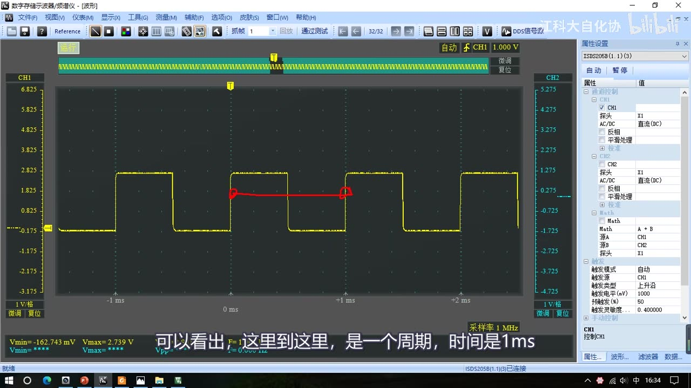
图 5：示波器实测程序一——一个周期 = 1ms，底部读数 F=1.000kHz、高/低电平时间相等（占空比 50%）；字幕「可以看出，这里到这里，是一个周期，时间是1ms」
2.8 封装 PWM_SetCompare1 与呼吸灯主循环
- 要在运行过程中改 CCR，就要用
TIM_SetCompare1这类函数。在PWM.c里封装一层：
void PWM_SetCompare1(uint16_t Compare)
{
TIM_SetCompare1(TIM2, Compare);
}
- 头文件里声明
void PWM_SetCompare1(uint16_t Compare);。 - 主函数改成呼吸灯：定义
uint8_t i;，在while(1)里用两个 for 循环不断改 CCR——
int main(void)
{
OLED_Init();
PWM_Init();
while (1)
{
for (i = 0; i <= 100; i++)
{
PWM_SetCompare1(i); // 占空比 0→100，逐渐变亮
Delay_ms(10);
}
for (i = 0; i <= 100; i++)
{
PWM_SetCompare1(100 - i); // 占空比 100→0，逐渐变暗
Delay_ms(10);
}
}
}
- 说明：「现在我 ARR+1 等于 100，CCR 的值才直接等于占空比」——所以这里可以直接把 0～100 循环变量当成占空比传进去。
- 现象：LED 不断变亮、变暗，呈现呼吸灯效果；示波器上占空比也在同步变化，把实物和波形放一起对照，「这个现象就非常直观了」。
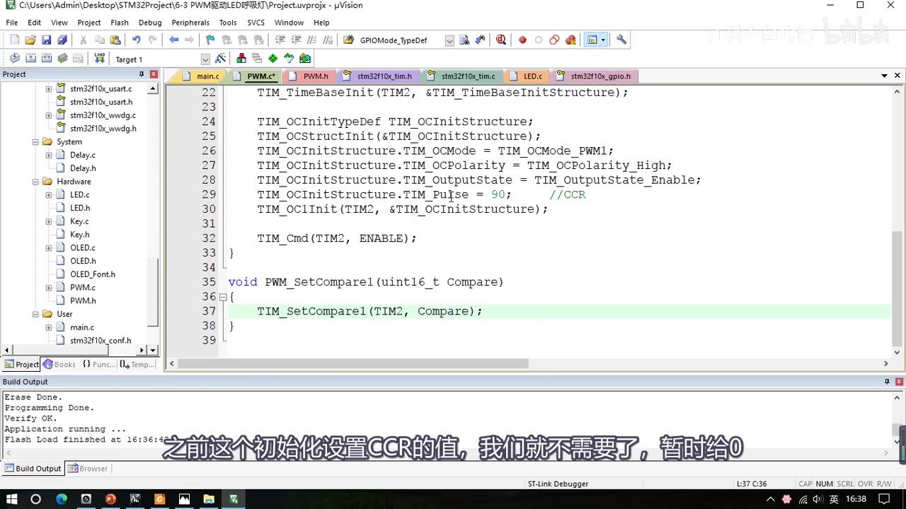
图 6：PWM_SetCompare1 封装——void PWM_SetCompare1(uint16_t Compare) { TIM_SetCompare1(TIM2, Compare); }（上面几行可见 TIM_Pulse = 90; //CCR、TIM_OC1Init、TIM_Cmd）
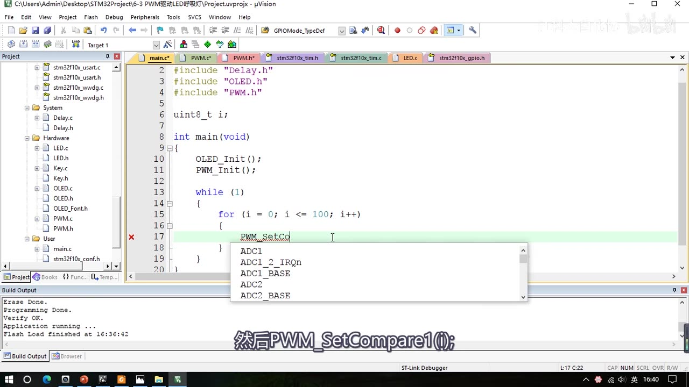
图 7：呼吸灯主循环（main.c）——OLED_Init(); PWM_Init(); 之后在 while(1) 里 for (i = 0; i <= 100; i++) 不断调用 PWM_SetCompare1(i)；字幕「然后 PWM_SetCompare1(i);」
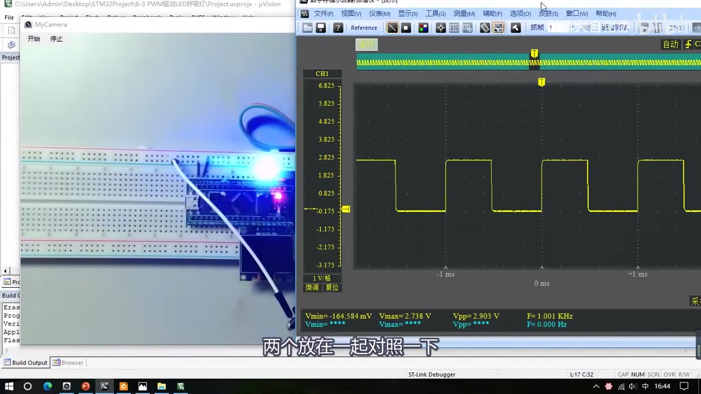
图 8：呼吸灯现象——LED 亮着（亮度在 0～100 占空比之间往复），右侧示波器 F=1.001kHz 占空比同步变化；字幕「两个放在一起对照一下」
2.9 扩展：把 PA0 重映射到 PA15
P15 提过「CH1 还能重映射到 PA15」，这里动手试一遍。引脚定义表里 TIM2 的重映射有四种方式：
| 重映射方式 | 引脚变化 |
|---|---|
| 无重映射 | PA0 / PA1 / PA2 / PA3 |
| 部分重映射 1 | PA15 / PB3 / PA2 / PA3（前两个变了，后两个没变） |
| 部分重映射 2 | PA0 / PA1 / PB10 / PB11（后两个变了，前两个没变） |
| 完全重映射 | 四个引脚都换位置 |
操作步骤（代码在 PWM_Init 最前面）：
RCC_APB2PeriphClockCmd(RCC_APB2Periph_AFIO, ENABLE); // ① 开 AFIO 时钟（APB2 设备）
GPIO_PinRemapConfig(GPIO_PartialRemap1_TIM2, ENABLE); // ② 选部分重映射 1：CH1 → PA15
GPIO_PinRemapConfig(GPIO_Remap_SWJ_JTAGDisable, ENABLE); // ③ 解除 JTAG 复用，保留 SWD
- 为什么要第③行：PA15 上电后默认复用为 JTAG 调试端口，想让它当普通 GPIO 或定时器通道，就必须先关闭调试端口的复用——用同一个
GPIO_PinRemapConfig函数，三个可选参数：GPIO_Remap_SWJ_NoJTRST：只解除 TRST（PB4），其余四个仍是调试端口；GPIO_Remap_SWJ_JTAGDisable：解除 JTAG，PA15 / PB3 / PB4 变回 GPIO，PA13 / PA14 仍为 SWD 调试端口（推荐）；GPIO_Remap_SWJ_Disable：SWD 和 JTAG 全部解除，5 个引脚全变 GPIO——这个参数千万不要随便调用：调了它并下载程序之后，调试端口就都没了，这之后再用 ST-Link 就下载不进程序了，只能用串口下载一个没解除调试端口的程序才能救回来。
- GPIO 初始化也要跟着改：既然挪到了 PA15，
GPIO_InitStructure.GPIO_Pin就要从GPIO_Pin_0改成GPIO_Pin_15。 - 验证：改完下载，PA0 上的呼吸灯不亮了；往 PA15 上插一个 LED（正极接 PA15、负极接 GND），灯亮 → 说明定时器通道 1 已经成功挪到 PA15。
- 收尾：重映射这三行先注释掉、保留在代码里（程序二复制过来时
f_00158/39:15 还能看到这三行注释，但 39:52 作者又说「上面这个也不需要了，先删掉」，之后图 11/图 18 的行号显示已经没有这三行），需要时再解除注释。
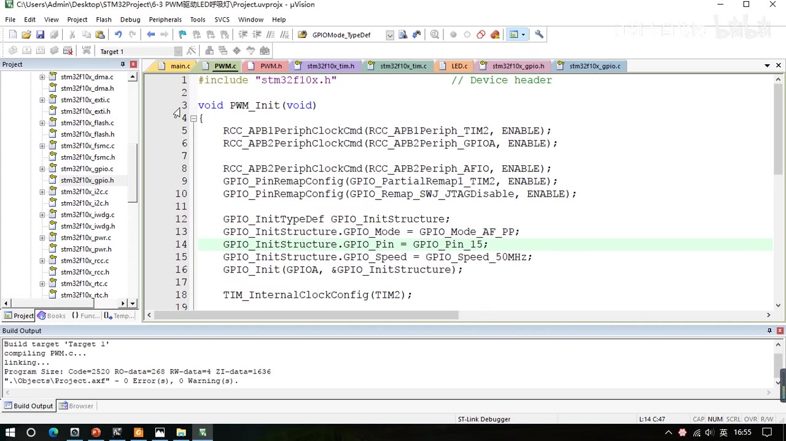
图 9：重映射代码（PWM.c 开头）——RCC_APB2PeriphClockCmd(RCC_APB2Periph_AFIO, ENABLE);、GPIO_PinRemapConfig(GPIO_PartialRemap1_TIM2, ENABLE);、GPIO_PinRemapConfig(GPIO_Remap_SWJ_JTAGDisable, ENABLE);，以及 GPIO_InitStructure.GPIO_Pin = GPIO_Pin_15;
3. 程序二：PWM 驱动舵机（36:43～50:57）
3.1 接线：SG90 的三根线
打开接线图 6-4 PWM驱动舵机.jpg，把接线图叠在面包板实拍上对照：
| 舵机线 | 线色 | 接到哪里 |
|---|---|---|
| GND | 棕色线 | 面包板的 GND |
| 5V 正极 | 红色线 | ST-Link 的 5V 输出引脚（右下角那个引脚，直接是 USB 的 5V） |
| PWM 信号 | 橙色线 | PA1（TIM2 的通道 2） |
- 5V 千万别接面包板的正极：那个正极只有 3.3V、输出功率也不大，带不动电机；所以接到 ST-Link 的 5V 脚（USB 供电，功率足够驱动电机）。
- 舵机接口是母头，用跳线和公对母杜邦线转接：棕色用跳线接面包板 GND、红色用公对母杜邦线接 ST-Link 5V、橙色也转一下接 PA1。
- 最后再在 PB1 接一个按键，用来控制舵机角度，电路就完成了。
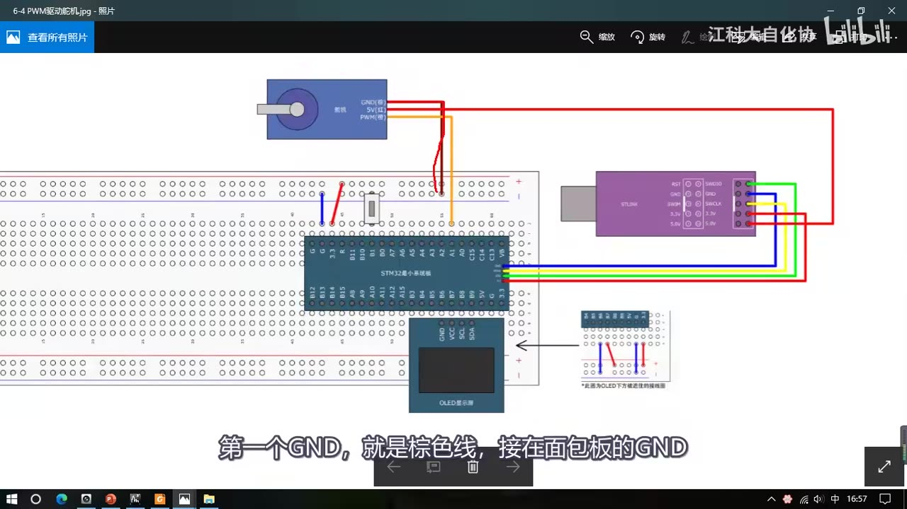
图 10：程序二接线图 6-4 PWM驱动舵机——SG90 在上方，棕线（GND）接面包板 GND、红线（5V）接 ST-Link 的 5V、橙线（PWM）接 PA1（TIM2_CH2）；右侧是 ST-Link 与 OLED
3.2 从程序一改：通道 1 → 通道 2
- 复制上一个工程，改名
6-4 PWM驱动舵机。 - 「驱动舵机的关键就是输出一个这样的 PWM 波形」（P15 讲过周期 20ms、高电平 0.5～2.5ms），波形对了驱动就非常简单。
- 要改动的地方（通道从 1 换成 2 一共四处）：
GPIO_InitStructure.GPIO_Pin = GPIO_Pin_0;→GPIO_Pin_1（PA1）；TIM_OC1Init(TIM2, &TIM_OCInitStructure);→TIM_OC2Init——「OC1 是通道 1 的初始化，我们要改成 OC2，这样这个结构体的参数就会配置到通道 2 了」；PWM_SetCompare1→PWM_SetCompare2（TIM_SetCompare2）；- 头文件里的函数声明同步改。
- 编译可能报错/警告（
function "PWM_SetCompare1" declared implicitly之类），是主函数里旧函数名还没改，改完就没了。
3.3 参数：50Hz（20ms），CCR 500～2500 对应 0.5～2.5ms
- 舵机要求周期 20ms，所以频率 = 1/20ms = 50Hz，代公式：
72M/(PSC+1)/(ARR+1) = 50。 - PSC 和 ARR 不是固定的，可以自己多试几次、找一组方便计算的值。作者试出来的值是：
PSC+1 = 72、ARR+1 = 20000→ 72M/72/20000 = 50Hz，正好满足第一式；- 同时 20K 个计数对应 20ms，于是 CCR = 500 就是 0.5ms，CCR = 2500 就是 2.5ms——参数非常直观。
- 写进代码：
TIM_Period = 20000 - 1; //ARR、TIM_Prescaler = 72 - 1; //PSC、TIM_Pulse = 0; //CCR（初值给 0）。
/* 程序二 PWM.c 改动的四处 */
GPIO_InitStructure.GPIO_Pin = GPIO_Pin_1; // PA1 → TIM2_CH2
TIM_TimeBaseInitStructure.TIM_Period = 20000 - 1; // ARR：20ms
TIM_TimeBaseInitStructure.TIM_Prescaler = 72 - 1; // PSC：50Hz
TIM_OCInitStructure.TIM_Pulse = 0; // CCR 初值
TIM_OC2Init(TIM2, &TIM_OCInitStructure); // 通道 2
void PWM_SetCompare2(uint16_t Compare)
{
TIM_SetCompare2(TIM2, Compare); // 运行中改 CCR
}
- 验证：主函数里调
PWM_SetCompare2(500)→ 舵机转到 0°；改成2500→ 180°；1500→ 90°；示波器测得周期 20ms、高电平 0.5ms / 2.5ms / 1.5ms、F ≈ 50Hz，都符合预期。
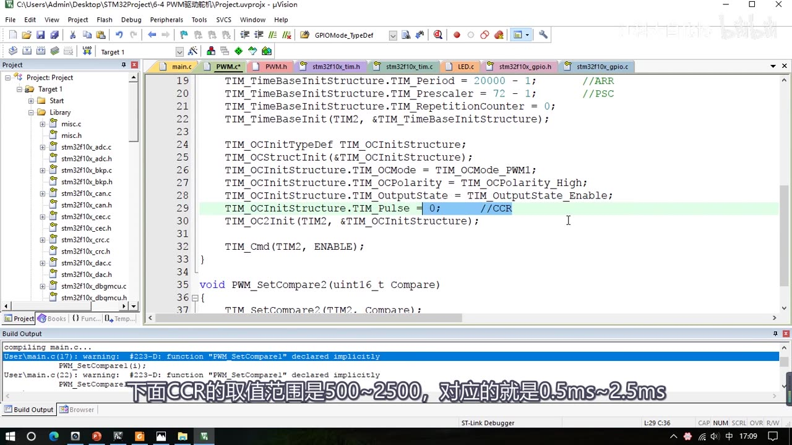
图 11：程序二 PWM.c 参数——TIM_Period = 20000 - 1; //ARR、TIM_Prescaler = 72 - 1; //PSC、TIM_Pulse = 0; //CCR、TIM_OC2Init(TIM2, ...)、PWM_SetCompare2；字幕「下面 CCR 的取值范围是 500～2500，对应的就是 0.5ms～2.5ms」
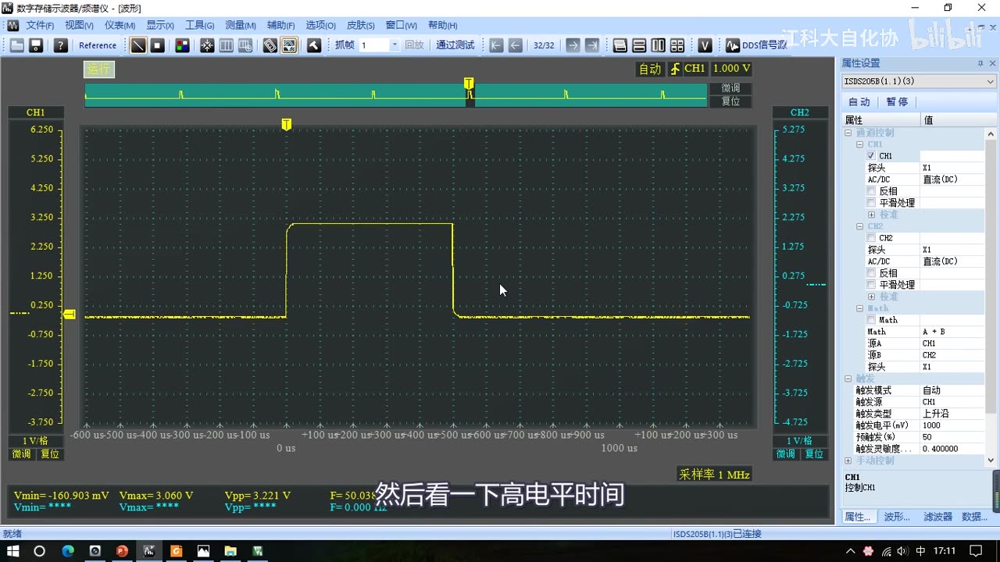
图 12：示波器实测程序二——CCR = 500 时周期 20ms、高电平约 500us（即 0.5ms，对应 0°），读数 F=50.03Hz；字幕「然后看一下高电平时间」
3.4 同一定时器多通道的特点
视频在这里专门补了一段（40:30～42:20），说明「同一个定时器的不同通道输出 PWM」的三个特点：
| 特点 | 原因 |
|---|---|
| 频率必须相同 | 不同通道共用一个计数器（CNT） |
| 占空比可以各自设定 | 每个通道有自己的 CCR |
| 相位同步 | 计数器更新时，所有通道的 PWM 同时跳变 |
- 所以
TIM_OC1Init～TIM_OC4Init可以同时写、同时用：驱动多个舵机或多个直流电机，用同一个定时器的不同通道就完全够了。 - 本程序只用通道 2，所以只调用
TIM_OC2Init。
3.5 Servo 模块：角度 → CCR 的线性映射
- 直接调
PWM_SetCompare2(500)参数不直观（「这参数谁知道是啥意思呢」），所以在Hardware里再建一个Servo.c/Servo.h模块，把「设置角度」封装起来：
#include "stm32f10x.h"
#include "PWM.h"
void Servo_Init(void)
{
PWM_Init(); // 继承 PWM 的底层初始化
}
void Servo_SetAngle(float Angle) // 参数用 float，方便计算
{
PWM_SetCompare2(Angle / 180 * 2000 + 500); // 0～180 映射到 500～2500
}
- 映射推导：0° 对应 500、180° 对应 2500，角度范围是 180、CCR 范围是 2000，所以先缩放
Angle / 180 * 2000，再加偏移 +500：Angle = 0→ 0/180×2000 = 0，+500 = 500 → 对应 0°；Angle = 180→ 180/180×2000 = 2000，+500 = 2500 → 对应 180°；- 映射是线性的，中间值一一对应。
- 头文件声明
void Servo_Init(void);和void Servo_SetAngle(float Angle);；主函数不再直接#include "PWM.h"，改成#include "Servo.h"、Servo_Init()、Servo_SetAngle(Angle)，这样更直观。
3.6 主函数与现象
#include "stm32f10x.h"
#include "Delay.h"
#include "OLED.h"
#include "Servo.h"
#include "Key.h"
uint8_t KeyNum; // 按键键码
float Angle; // 角度变量
int main(void)
{
OLED_Init();
Servo_Init();
Key_Init();
OLED_ShowString(1, 1, "Angle:");
while (1)
{
KeyNum = Key_GetNum();
if (KeyNum == 1)
{
Angle += 30;
if (Angle > 180)
{
Angle = 0;
}
}
Servo_SetAngle(Angle);
OLED_ShowNum(1, 7, Angle, 3);
}
}
- 现象：每按一下按键，角度加 30°，舵机就转到对应角度并保持住（手拨输出轴能感到一股力在维持位置）；示波器上高电平时间（占空比）同步变化，
F ≈ 50Hz不变。 - 第二个程序到此写完（50:57）。
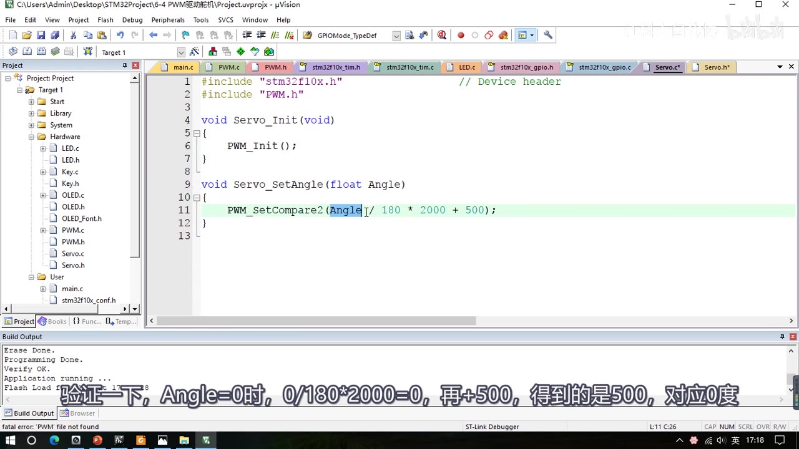
图 13：Servo.c 模块——void Servo_Init(void) { PWM_Init(); } 与 void Servo_SetAngle(float Angle) { PWM_SetCompare2(Angle / 180 * 2000 + 500); }；字幕「验证一下，Angle=0时，0/1802000=0，再+500，得到的是500，对应0度」*
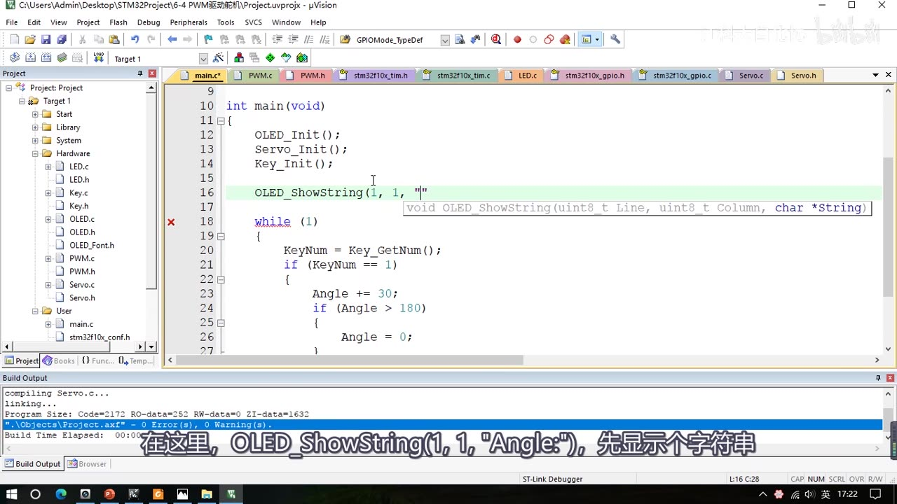
图 14：程序二主函数——OLED_Init(); Servo_Init(); Key_Init(); 后 OLED_ShowString(1, 1, "Angle:")，while 里按键则 Angle += 30、if (Angle > 180) { Angle = 0; }（后面 Servo_SetAngle(Angle) 与 OLED 显示按口述补全）
4. 程序三：PWM 驱动直流电机（51:03～1:04:25）
4.1 接线：TB6612 模块的引脚与电源
打开接线图 6-5 PWM驱动直流电机.jpg（红色 TB6612 模块 + 130 电机 + 面包板 + OLED + 按键）：
| TB6612 引脚 | 接到哪里 | 说明 |
|---|---|---|
| VM | ST-Link 的 5V | 电机电源，与电机额定电压一致、要大电流 |
| VCC | 面包板 3.3V | 逻辑电源（2.7～5.5V），跟控制器一致 |
| GND | 面包板电源负极 | 系统地 |
| AO1 / AO2 | 电机的两根线 | 不分正反，对调这两根线电机就会反转 |
| STBY | 面包板 3.3V | 不待机（接 GND 就待机） |
| PWMA | PA2（TIM2_CH3） | 速度控制，必须接 PWM 输出 |
| AIN1 | PA4 | 方向控制，普通 GPIO 即可 |
| AIN2 | PA5 | 方向控制，普通 GPIO 即可 |
| B 路（PWMB/BIN1/BIN2/BO1/BO2） | 空着 | 只用一个电机就随便选一路，另一路空着 |
- 面包板接线顺序：模块背面有引脚标号，把 VM 放在左下角插在面包板中间——「这个千万别插反了，要不然容易烧坏驱动」；然后依次接第二个脚 VCC→电源正、第三个脚 GND→电源负，AO1/AO2 接电机两根线；上面四个脚 PWMA→PA2、AIN2→PA5、AIN1→PA4、STBY→电源正；最后用公对母杜邦线把 VM 接 ST-Link 的 5V；PB1 按键之前已经接好。
- 小提醒：螺旋桨先别装，「这个电机的螺旋桨转的还是比较快的，可以先不插，要不然调试的时候可能比较危险」。
- 这里的 PA2 对应 TIM2 的通道 3，所以等下初始化通道 3 就行了——又换了一个通道。
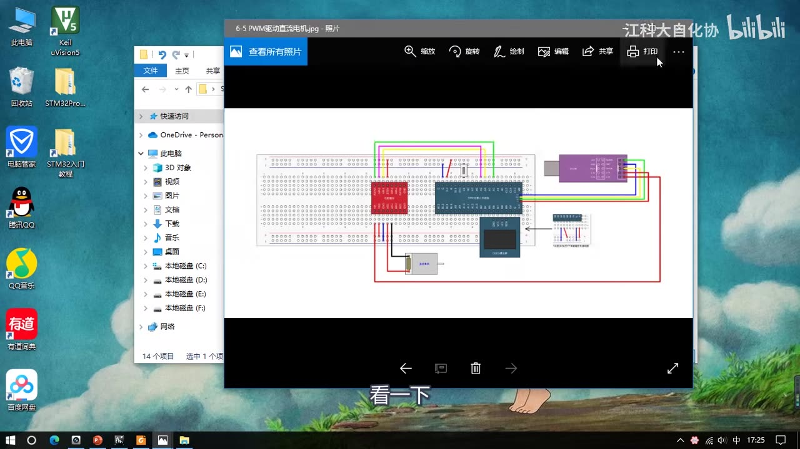
图 15：程序三接线图 6-5 PWM驱动直流电机——红色 TB6612 驱动模块、130 电机、面包板、OLED；按本节接线说明：VM（左下角）接 ST-Link 5V、VCC 接 3.3V、AO1/AO2 接电机、PWMA 接 PA2、AIN1/AIN2 接 PA4/PA5、STBY 接 3.3V
4.2 从程序一改：通道 1 → 通道 3
- 复制
6-3 PWM驱动LED呼吸灯工程，改名6-5 PWM驱动直流电机。 - 此时代码还是在通道 1 输出 1kHz 的 PWM，而电机接在通道 3上，所以要改（和程序二同样的四处）：
GPIO_Pin_0→GPIO_Pin_2；TIM_OC1Init→TIM_OC3Init；PWM_SetCompare1→PWM_SetCompare3；- 头文件里的声明同步改成 3。
4.3 Motor 模块：方向脚 + 速度函数
在 Hardware 里建 Motor.c / Motor.h：Motor_Init 里先 PWM_Init() 初始化 PWM，然后额外初始化两个方向控制脚（从 LED.c 复制 GPIO 初始化代码改一改）：
#include "stm32f10x.h"
#include "PWM.h"
void Motor_Init(void)
{
RCC_APB2PeriphClockCmd(RCC_APB2Periph_GPIOA, ENABLE);
GPIO_InitTypeDef GPIO_InitStructure;
GPIO_InitStructure.GPIO_Mode = GPIO_Mode_Out_PP; // 普通推挽输出
GPIO_InitStructure.GPIO_Pin = GPIO_Pin_4 | GPIO_Pin_5; // AIN1、AIN2
GPIO_InitStructure.GPIO_Speed = GPIO_Speed_50MHz;
GPIO_Init(GPIOA, &GPIO_InitStructure);
PWM_Init(); // 底层 PWM
}
/* Speed：-100～100，负数表示反转 */
void Motor_SetSpeed(int8_t Speed)
{
if (Speed >= 0) // 正转
{
GPIO_SetBits(GPIOA, GPIO_Pin_4);
GPIO_ResetBits(GPIOA, GPIO_Pin_5);
PWM_SetCompare3(Speed);
}
else // 反转
{
GPIO_ResetBits(GPIOA, GPIO_Pin_4);
GPIO_SetBits(GPIOA, GPIO_Pin_5);
PWM_SetCompare3(-Speed); // SetCompare 只能传正数
}
}
- 方向逻辑：「哪个为高、哪个为低不重要，就是极性不一样而已」——正转时 PA4 高、PA5 低；反转时把两个 Set/Reset 反过来即可（对应 TB6612 真值表里 IN1/IN2 一高一低才转、全高制动、全低停止，见 P15）。
- 速度：最后把
Speed传给PWM_SetCompare3。注意TIM_SetCompare3只能传正数，所以在反转分支里要写成-Speed（Speed 本身是负数，取反才变正）。 - 测试：先
Motor_SetSpeed(50)→ 正转；改成-50→ 反转；改成100→ 满速；每次都用手试一下方向。
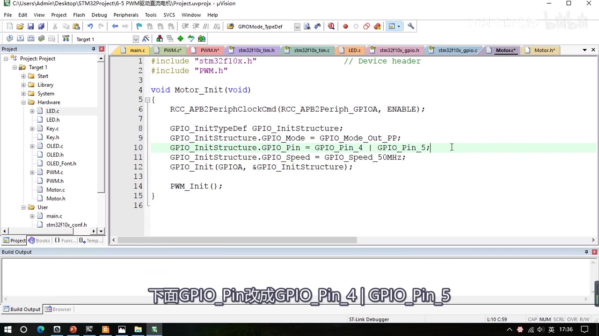
图 16：Motor.c 的 Motor_Init——GPIO_Mode_Out_PP、GPIO_Pin_4 | GPIO_Pin_5、GPIO_Speed_50MHz、GPIO_Init(GPIOA, ...)，最后 PWM_Init()；字幕「下面 GPIO Pin 改成 GPIO_Pin_4 | GPIO_Pin_5」
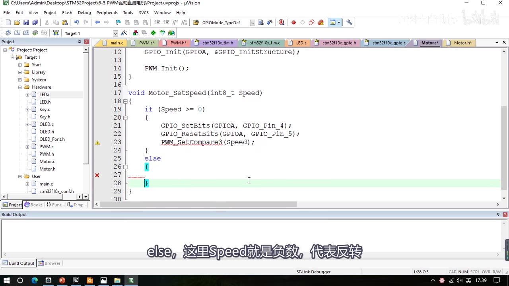
图 17：Motor_SetSpeed(int8_t Speed) 正转分支——if (Speed >= 0) { GPIO_SetBits(GPIOA, GPIO_Pin_4); GPIO_ResetBits(GPIOA, GPIO_Pin_5); PWM_SetCompare3(Speed); }，下面 else 分支在画面里还没展开（内容据口述还原，见「存疑」）
4.4 坑：1kHz 会让电机「唱歌」→ 把 PSC 改成 36-1（20kHz）
- 电机转起来之后发现一个问题：电机会发出「蜂鸣器」一样的响声，堵转的时候最明显（转起来时被电机本身的声音盖住，听不太清）。
- 原因：电机里面也是线圈和磁铁，在 1kHz 的 PWM 驱动下会振动发声——这是正常现象，不介意可以不管。
- 介意的话，解法是加大 PWM 频率：人耳听到声音的频率范围是 20Hz～20kHz，现在给的是 1kHz，正好在人耳范围内；频率足够大、超出人耳范围就听不到了。
- 加大频率靠减小预分频器（PSC），这样不会影响占空比。把
TIM_Prescaler从720 - 1改成36 - 1：
72M / 36 / 100 = 20000Hz = 20kHz
- 改完再堵转试，「就听不到声音了」——电机模块测试完成。
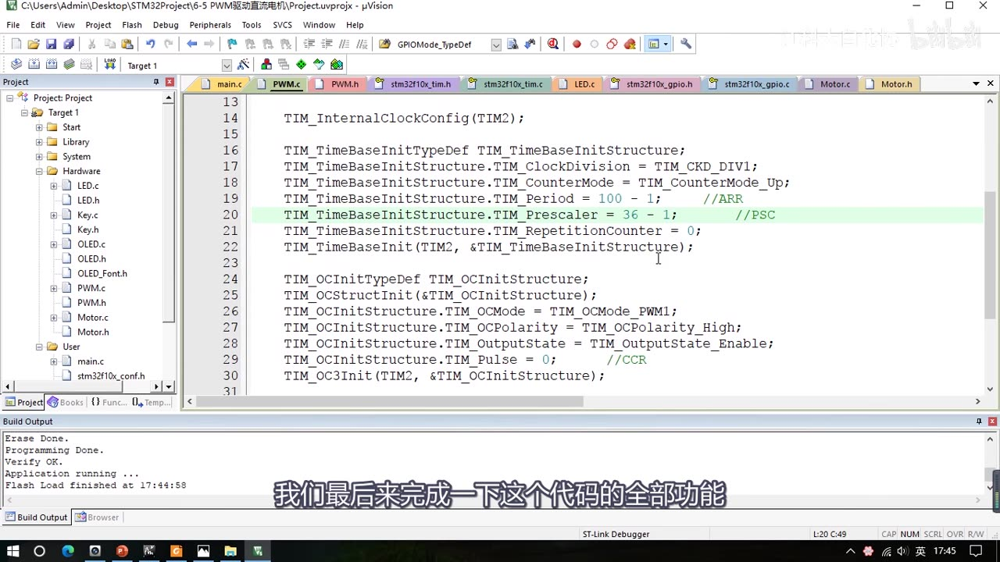
图 18：程序三最终 PWM.c 时基——TIM_Period = 100 - 1; //ARR、TIM_Prescaler = 36 - 1; //PSC（72M/36/100 = 20kHz，超出人耳范围）、TIM_Pulse = 0、TIM_OC3Init(TIM2, ...)
4.5 主函数、现象与「方向反了怎么办」
#include "stm32f10x.h"
#include "Delay.h"
#include "OLED.h"
#include "Motor.h"
#include "Key.h"
uint8_t KeyNum; // 按键键码
int8_t Speed; // 有符号的速度变量
int main(void)
{
OLED_Init();
Motor_Init();
Key_Init();
OLED_ShowString(1, 1, "Speed:");
while (1)
{
KeyNum = Key_GetNum();
if (KeyNum == 1)
{
Speed += 20;
if (Speed > 100)
{
Speed = -100;
}
}
Motor_SetSpeed(Speed);
OLED_ShowSignedNum(1, 7, Speed, 3);
}
}
- 速度循环逻辑：每按一下
Speed += 20；超过 100 就跳回 -100——所以速度从 -100～100 循环变化（正转满速 → 按键 → 立刻反转满速 → 逐步回到 0 → 正转……）。 - OLED 显示：
OLED_ShowString(1, 1, "Speed:")先显示字符串，OLED_ShowSignedNum(1, 7, Speed, 3)显示有符号数（能显示负号），占 3 位。 - 最终现象：OLED 显示
Speed:+100等数值，按键改速度、电机正反转加减速。
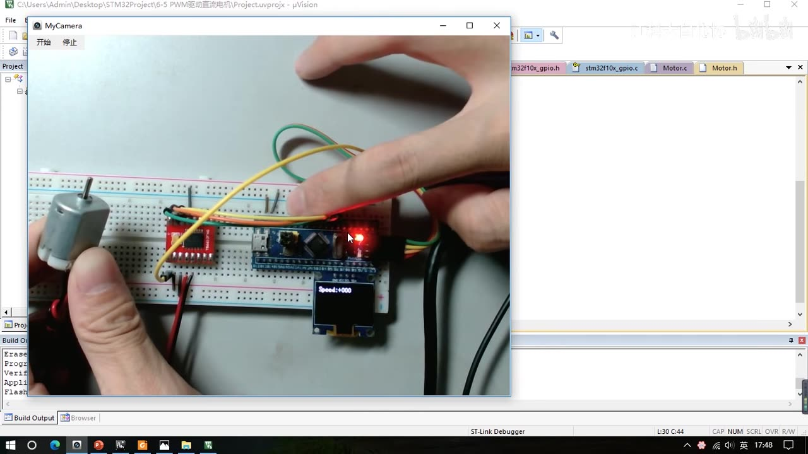
图 19：程序三最终现象——面包板上 TB6612 模块与电机，OLED 显示 Speed:+100，手按 PB1 按键改变速度
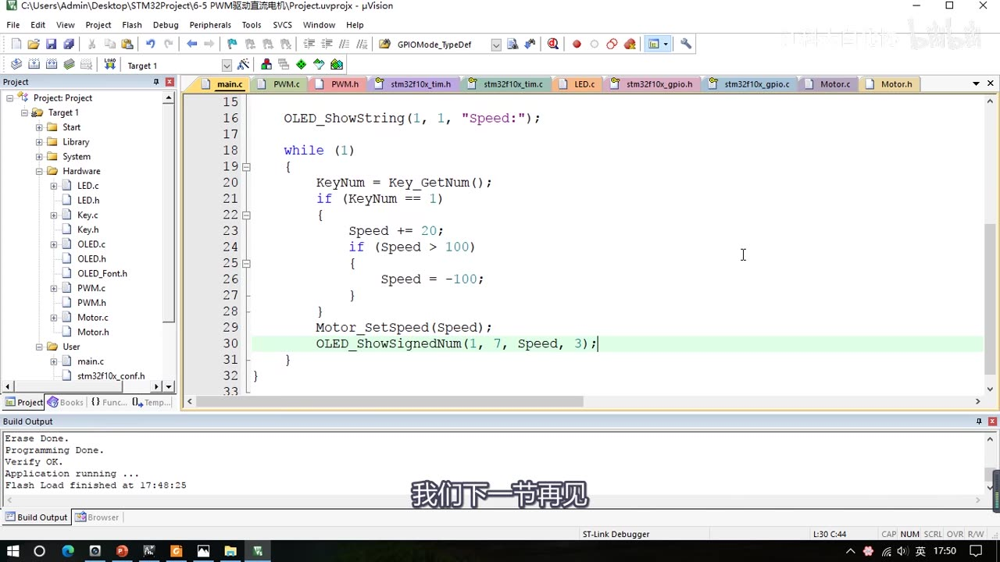
图 20：程序三最终主函数——OLED_ShowString(1, 1, "Speed:")；while(1) 里 KeyNum = Key_GetNum(); if (KeyNum == 1) { Speed += 20; if (Speed > 100) { Speed = -100; } }，Motor_SetSpeed(Speed);，OLED_ShowSignedNum(1, 7, Speed, 3);；字幕「我们下一节再见」
如果发现电机方向（极性）反了，作者给了三种改法（1:03:52，只口述没演示）：
- 最简单的：把电机的两根线反过来接；
- 把输入的 IN1 和 IN2 反过来（也就是 AIN1/AIN2 两根线对调）；
- 在程序里把 Set 和 Reset 反过来——「这样如果你换引脚的话，比较方便修改」。
5. 三个程序的共同规律
- 同一套模板：三个程序都是复制上一个工程，然后只改三样——引脚（
GPIO_Pin_x）、通道函数（TIM_OCxInit/PWM_SetComparex）、参数（PSC/ARR）；PWM_Init的骨架、五步流程完全一样。
| 程序 | 复制自 | 通道/引脚改动 | 其他改动 |
|---|---|---|---|
| ① 呼吸灯 | OLED 工程 | 新写 PWM_Init：GPIO_Pin_0、TIM_OC1Init、PWM_SetCompare1 |
PSC=720-1、ARR=100-1；GPIO_Mode_AF_PP；TIM_Cmd |
| ② 舵机 | ① 呼吸灯 | GPIO_Pin_1、TIM_OC2Init、PWM_SetCompare2 |
PSC=72-1、ARR=20000-1；新增 Servo.c/.h |
| ③ 直流电机 | ① 呼吸灯 | GPIO_Pin_2、TIM_OC3Init、PWM_SetCompare3 |
PSC=36-1、ARR=100-1（20kHz）；新增 Motor.c/.h + 方向脚 PA4/PA5 |
- 频率由 PSC/ARR 决定，占空比由 CCR 决定：想改频率就动 PSC 或 ARR（P15 公式
Freq = CK_PSC/(PSC+1)/(ARR+1)），想改占空比就动 CCR（Duty = CCR/(ARR+1)）；改频率时注意别破坏「CCR 与时间/角度的对应关系」（比如舵机的 500～2500 是靠 ARR+1=20000 才成立的）。 - 分层封装：底层
PWM.c只管「按通道输出 PWM、设置 CCR」，上层Servo.c/Motor.c负责「把角度/速度翻译成 CCR 和方向脚电平」——换外设时上层改，底层不用动。 - 同一定时器多通道：频率必须相同、占空比各自、相位同步；本集三个程序都用 TIM2 的不同通道，理论上可以同时开三路 PWM（驱动多个舵机/电机够用）。
坑与易错点
- GPIO 必须配成
GPIO_Mode_AF_PP（复用推挽）：普通推挽输出的引脚由输出数据寄存器（ODR）控制，定时器根本接管不了；只有复用模式才把控制权交给片上外设，PWM 才能从引脚输出。 PSC和ARR写进代码时都要「减 1」：720-1、100-1、20000-1、72-1、36-1——因为实际分频系数/周期数是「值 + 1」。- 换通道要改四处，漏一处就编译不过或没输出：
GPIO_Pin_x、TIM_OCxInit、PWM_SetComparex（含TIM_SetComparex）、头文件函数声明。 TIM_Pulse只是 CCR 的初值：初始化时给的 50 只决定初始占空比；运行中改占空比要用TIM_SetComparex（本集封装成PWM_SetComparex）。- 别乱抄
TIM_OC1PreloadConfig和TIM_CtrlPWMOutputs：前者是 CCR 预装（影子寄存器，一般不用），后者只有高级定时器才必须调用（否则高级定时器 PWM 不输出）；本集三个程序都是通用定时器 TIM2，都没有调用这两个函数。 TIM_OCStructInit要先给结构体赋默认值：不赋初值会留下未确定的成员值，作者遇到过「高级定时器初始化函数位置不同，4 路 PWM 只输出 3 路」的怪问题。TIM_ClockDivision与定时时间无关：它只影响输入滤波采样频率，随便配（本集都是TIM_CKD_DIV1）；TIM_RepetitionCounter是高级定时器才用的，通用定时器给 0。- 同一个定时器的多路 PWM 频率必须相同（共用一个 CNT），只有占空比能各自设——想让两路 PWM 频率不同，必须换定时器。
- 舵机的 5V 不要接面包板的正极：那里只有 3.3V，功率也小，带不动舵机；要接 ST-Link 的 5V（USB 5V）。
- 舵机的角度体系要与 P15 对上：P15 用的是 -90°～+90°（0.5～2.5ms），本集用的是 0°～180°（CCR 500～2500）——同一款 180° 舵机的两种写法，不是矛盾：
0°～180°对应脉宽 0.5～2.5ms，也对应-90°～+90°。 Servo_SetAngle的映射公式别写错：Angle / 180 * 2000 + 500；先除后乘（先算出比例再缩放），偏移 +500 不能漏，否则 0° 会变成 0 而不是 500。- 电机方向脚是普通 GPIO 推挽输出（
GPIO_Mode_Out_PP），不是复用——只有 PWM 脚（PWMA）才需要复用推挽。 TIM_SetCompare只能传正数：反转时Speed是负数，要写PWM_SetCompare3(-Speed)。- TB6612 的 VM 别接错：VM 是电机电源（接 ST-Link 5V、与电机额定电压一致、要大电流），VCC 是逻辑电源（3.3V）；模块插面包板时 VM 放左下角，「千万别插反，容易烧坏驱动」。
- STBY 要接高电平（3.3V）才工作：接 GND 芯片就待机、电机不动。
- 1kHz 的 PWM 会让电机「唱歌」：线圈在 PWM 下振动，堵转时最明显；解法是减小 PSC 提高频率（
720-1→36-1，20kHz，超出人耳 20Hz～20kHz），改频率不影响占空比。 - 重映射 PA15 时别用
GPIO_Remap_SWJ_Disable：它会把 SWD 和 JTAG 全关掉，下载不进程序；应该用GPIO_Remap_SWJ_JTAGDisable（保留 SWD 的 PA13/PA14）。 - 重映射之后 GPIO 初始化也要改：
GPIO_Pin_0→GPIO_Pin_15，否则你还在初始化 PA0，PA15 没被配置就输出不了。
时间轴
| 时间 | 内容 |
|---|---|
| 0:01 | 开场：本小节学习输出比较的代码部分（PWM） |
| 0:05 | 先看接线图 6-3 PWM驱动LED呼吸灯 |
| 0:14 | 在 PA0 引脚上插了 LED，准备输出 PWM 驱动它呈现不同亮度 |
| 0:25 | LED 正极接 PA0、负极接 GND：正极性驱动，高电平点亮、低电平熄灭 |
| 0:39 | 占空比越大 LED 越亮、越小越暗；看面包板：只需一个 LED |
| 0:56 | 回到工程文件夹：复制 OLED 的工程 |
| 1:02 | 改名为 6-3 PWM驱动LED呼吸灯；删掉用不到的 OLED 显示代码，但保留 OLED 模块方便调试 |
| 1:31 | 先编译通过（0 Error 0 Warning）；在 Hardware 右键 Add New Item 建 PWM 模块 |
| 1:37 | 头文件固定部分、C 文件加 stm32 头文件、写 PWM_Init 框架 |
| 2:44 | 对照 PPT「PWM基本结构」理五步：时钟源 / 时基单元 / 输出比较单元 / GPIO 复用推挽 / 运行控制 |
| 3:52 | 看 stm32f10x_tim.h：TIM_OC1Init～TIM_OC4Init 配置四个输出比较单元 |
| 4:45 | TIM_OCStructInit 给结构体赋默认值 |
| 5:10 | 强制输出函数（等效 100%/0% 占空比）了解即可 |
| 5:50 | TIM_OC1PreloadConfig 等四个：配置 CCR 预装（影子寄存器），一般不用 |
| 6:07 | TIM_OC1FastConfig 等四个：快速使能；TIM_ClearOC1Ref 等了解一下即可 |
| 6:43 | TIM_OC1PolarityConfig / OC1NPolarityConfig 等：单独设置极性（带 N 是互补通道，C4 没有 OC4N） |
| 7:26 | TIM_CCxCmd / TIM_CCxNCmd 单独改输出使能；TIM_SelectOCxM 选输出比较模式 |
| 7:49 | TIM_SetCompare1～TIM_SetCompare4：单独改 CCR 的值 |
| 8:04 | 输出比较相关的函数介绍完 |
| 8:25 | 开始写代码：时基单元代码从「定时器定时中断」工程复制 |
| 8:55 | 复制：开时钟、选内部时钟、初始化时基单元、启动定时器 |
| 10:20 | 选通道函数：用 PA0 → 第一个输出比较通道 → TIM_OC1Init |
| 10:24 | TIM_OC1Init 参数：TIM2 + 输出比较结构体；结构体成员很多，带 N 的和 IdleState 是高级定时器才用 |
| 11:19 | TIM_OCMode、TIM_OCPolarity、TIM_OutputState、TIM_Pulse（=CCR）逐个介绍 |
| 12:24 | 讲 TIM_OCStructInit：不赋初值可能出现高级定时器 4 路只出 3 路的怪问题 |
| 13:15 | 所以先 TIM_OCStructInit 赋默认值，再改要改的成员 |
| 14:00 | TIM_OCMode 可选值：Timing 冻结、Active/Inactive、Toggle、PWM1/PWM2、强制输出（初始化不让用） |
| 15:05 | 选 TIM_OCMode_PWM1；TIM_OCPolarity_High、TIM_OutputState_Enable |
| 16:27 | TIM_Pulse 就是 CCR 的值（会被加载到捕获比较寄存器） |
| 17:13 | PSC 是预分频、ARR 是周期，共同决定频率和占空比 |
| 17:21 | 还差 GPIO：通道初始化好了，但波形要靠 GPIO 输出 |
| 17:39 | 打开引脚定义表：TIM2_CH1_ETR 在 PA0 这一行 → CH1 只能在 PA0 |
| 18:00 | 其他通道：CH2→PA1、CH3→PA2、CH4→PA3；这个关系是定死的 |
| 18:47 | 但可以重映射（AFIO）：CH1 能从 PA0 挪到 PA15 |
| 19:20 | 配置 PA0；GPIO 习惯放上面，别忘了开 GPIOA 时钟 |
| 20:35 | GPIO_Pin 改成 GPIO_Pin_0 |
| 20:45 | GPIO 模式必须选 GPIO_Mode_AF_PP 复用推挽：输出控制权从 ODR 交给片上外设 |
| 21:56 | 最后 TIM_Cmd(TIM2, ENABLE) 启动定时器，PWM 就能从 PA0 输出 |
| 22:01 | 看 ARR/PSC/CCR 三个参数，套 P15 的公式 |
| 22:24 | 要求 1kHz、50%、分辨率 1% → 三个等式 |
| 23:00 | 解得 ARR+1=100、CCR=50、PSC+1=720 → ARR 给 100-1、PSC 给 720-1、CCR 给 50 |
| 23:30 | 头文件声明、主函数 include PWM.h 并调用；编译下载 |
| 23:55 | LED 已点亮，其实在以 1kHz 闪烁（肉眼看不出） |
| 24:04 | 用虚拟示波器：探头 GND 与 STM32 共地、探头接 PA0 |
| 24:45 | 一个周期 1ms、F=1.000kHz、高低电平时间相等 → 占空比 50%，参数没问题 |
| 25:13 | 改 CCR=10 → 占空比 10%，LED 变暗 |
| 25:49 | 改 CCR=90 → 占空比 90%，LED 变亮 |
| 26:40 | 回到代码完成最终效果：封装 PWM_SetCompare1，运行中改 CCR |
| 26:43 | void PWM_SetCompare1(uint16_t Compare) 里调 TIM_SetCompare1(TIM2, Compare)；头文件声明 |
| 27:18 | 主循环不断调用它；定义 uint8_t i |
| 27:30 | 两个 for：0→100 逐渐变亮、100-i 逐渐变暗，每次 Delay_ms(10) |
| 28:40 | 说明：ARR+1=100 时 CCR 才直接等于占空比 |
| 29:00 | 编译下载：LED 不断变亮变暗，示波器占空比同步变化 |
| 29:40 | 第一个程序完成；接下来扩展重映射（PA0→PA15） |
| 29:48 | 要开 AFIO 时钟（APB2 外设）；在 gpio.h 找 GPIO_PinRemapConfig |
| 30:37 | 第一个参数是重映射方式；查手册 AFIO 章节的重映射表 |
| 31:04 | TIM2 有四种方式：无重映射（PA0～PA3）、部分重映射1、部分重映射2、完全重映射 |
| 31:34 | 选部分重映射1：GPIO_PartialRemap1_TIM2（PA15/PB3 + PA2/PA3） |
| 32:29 | PA15 上电默认是 JTAG 调试端口，还要解除调试端口复用 |
| 32:53 | 三个调试端口参数：NoJTRST（只放 PB4）、JTAGDisable（放 PA15/PB3/PB4、保留 SWD）、SWJ_Disable（全放，慎用） |
| 34:43 | 选 GPIO_Remap_SWJ_JTAGDisable；一共三行：AFIO 时钟 + 部分重映射1 + 关闭 JTAG |
| 35:55 | GPIO 初始化里的 GPIO_Pin_0 改成 GPIO_Pin_15 |
| 36:11 | PA0 的灯不亮了，往 PA15 插 LED（正极 PA15、负极 GND）→ 亮，重映射成功 |
| 36:33 | 重映射三行先注释掉保留，以后要用再解除注释 |
| 36:43 | 第一个代码完成，开始第二个代码 |
| 36:47 | 接线图 6-4 PWM驱动舵机：SG90 三根线 |
| 37:03 | 棕=GND 接面包板 GND；红=5V 接 ST-Link 的 5V（面包板 3.3V 带不动） |
| 37:16 | 橙=PWM 接 PA1（换成通道 2）；PB1 再接一个按键 |
| 39:05 | 复制上一个工程，改名 6-4 PWM驱动舵机 |
| 39:47 | 改通道：GPIO_Pin_1、TIM_OC1Init→TIM_OC2Init、SetCompare1→SetCompare2、头文件同步 |
| 40:06 | 同一定时器 4 通道可同时初始化：频率相同（共用 CNT）、占空比各自（各自 CCR）、相位同步 |
| 40:55 | 驱动多个舵机/电机，用同一定时器不同通道就够了 |
| 41:15 | 编译报错：main 里旧函数名还没改 |
| 41:49 | 参数：舵机 20ms/50Hz → 72M/(PSC+1)/(ARR+1)=50；取 PSC+1=72、ARR+1=20000 |
| 42:55 | TIM_Pulse 初值给 0 |
| 43:11 | 验证：500→0 度、2500→180 度、1500→90 度 |
| 44:00 | 示波器：周期 20ms、高电平 500us、F=50.0Hz |
| 45:10 | 回到代码完成最终功能：给舵机建模块 |
| 45:44 | Hardware 建 Servo.c：Servo_Init 调 PWM_Init |
| 47:00 | Servo_SetAngle(float Angle)：0～180 映射到 500～2500 |
| 47:30 | 公式 Angle / 180 * 2000 + 500；验证 0→500、180→2500、线性 |
| 48:40 | 头文件声明两个函数；main 改用 Servo 模块 |
| 48:44 | 加按键：Key_Init、uint8_t KeyNum、float Angle |
| 49:45 | 主循环：Angle += 30、if(Angle > 180) Angle = 0、Servo_SetAngle(Angle)、OLED 显示 |
| 50:15 | 现象：每按一下舵机加 30 度，示波器占空比同步变化 |
| 50:57 | 第二个程序完成，开始第三个 |
| 51:03 | 接线图 6-5 PWM驱动直流电机：TB6612 红色模块 |
| 51:15 | VM→ST-Link 5V；VCC→面包板 3.3V；GND→电源负；AO1/AO2→电机 |
| 51:30 | AO1/AO2 不分正反（对调即反转）；B 路空着 |
| 52:10 | STBY→3.3V；AIN1/AIN2→PA4/PA5；PWMA→PA2（通道 3）；PB1 按键 |
| 53:10 | 面包板接线：VM 放左下角别插反（容易烧驱动）；螺旋桨先别装 |
| 54:27 | 复制呼吸灯工程，改名 6-5 PWM驱动直流电机 |
| 54:55 | 改通道：GPIO_Pin_2、TIM_OC1Init→TIM_OC3Init、SetCompare1→SetCompare3 |
| 55:13 | 建 Motor 模块：Motor_Init 里先 PWM_Init()，再配 PA4/PA5 |
| 56:30 | GPIO_Mode_Out_PP、GPIO_Pin_4 / GPIO_Pin_5、GPIO_Init(GPIOA, ...)，最后 PWM_Init() |
| 56:47 | Motor_SetSpeed(int8_t Speed)，速度范围 -100～100 |
| 58:00 | if (Speed >= 0)：PA4 置高、PA5 置低、PWM_SetCompare3(Speed) |
| 58:30 | else：Set/Reset 对调，PWM_SetCompare3(-Speed)（SetCompare 只能传正数） |
| 59:15 | 测试：50 正转、-50 反转、100 满速，手试方向 |
| 1:00:15 | 坑：电机发出蜂鸣器声（线圈在 1kHz PWM 下振动，堵转最明显） |
| 1:00:40 | 解法：加大 PWM 频率超出人耳 20Hz～20kHz；减小预分频不影响占空比 |
| 1:01:30 | TIM_Prescaler 改成 36-1 → 72M/36/100 = 20kHz；堵转听不到声音了 |
| 1:01:50 | 完成最终功能：include Key.h、uint8_t KeyNum、int8_t Speed |
| 1:02:15 | Key_Init；主循环按键 Speed += 20、if(Speed > 100) Speed = -100 |
| 1:02:45 | Motor_SetSpeed(Speed)；OLED 显示 Speed: |
| 1:03:10 | 现象：OLED 显示 Speed:+100 等，按键改速度、正反转加减速 |
| 1:03:52 | 方向极性反了：①对调电机两根线 ②对调 IN1/IN2 ③程序里 SetBits/ResetBits 对调 |
| 1:04:22 | 结束：本小节内容全部完成，下一节再见 |
存疑
- 本集文本来自画面硬字幕的 OCR（PP-OCRv4，source=subtitle-ocr，902 段），不是 ASR。污染非常严重：Keil 的 Build Output（
objects\Project.axf" - 0 Error(s), 0 Warning(s).、Flash Load finished at …）在本集字幕里出现了上百次，示波器读数（Vmin=… Vmax=… Vpp=… F=…）也大量混入，这些都不是口述内容；另外还有大量行首噪声（Pm、Px、rEr、crj、山、门、钥、三、古一等）。典型 OCR 错字（本集实际出现）：舵机→ 「舱机/舱舵机」、PA0→ 「PAO」、引脚→ 「引I脚/引1脚」、删掉→ 「册掉」、GPIO→ 「GPlO/GPIO回」、比较→ 「此较/比轿」、GPIO_Mode_AF_PP→ 「GPIOModeAFPP」、OCMode/OCPolarity/OutputState→ 「OCMOde/OCPolaritv/Outputstate」、Pulse→ 「Pluse」、TIM_OC1Init→ 「TIMOC1llnit/Tm OC1nitt」、AFIO→ 「AFO」、SWJ_JTAGDisable→ 「SWJ亚TAGDisable」、ST-Link→ 「STLNK」、3.3V→ 「TE3.3V」、偏移→ 「扁移」、PWM_SetCompare1→ 「Pm_setcopare1/PWM SetComparel」、直流电机→ 「自流电机」、比如→ 「此如」等，已按画面和上下文校正。 - 帧间隔 15 秒、代码是逐行滚动的：单帧经常只显示半屏代码，不少中间过程没有对应帧；本笔记里的代码以能看清的帧 + 多帧交叉为准，看不清的不猜数值。
f_00083（20:30）是「中间态」代码，不是最终参数：那一帧还是从「定时器定时中断」工程复制来、没改完的状态——TIM_Period = 10000 - 1、GPIO_Mode_Out_PP、GPIO_Pin_1 | GPIO_Pin_2；最终值是 23:15 的100-1/720-1/GPIO_Pin_0/GPIO_Mode_AF_PP/TIM_Pulse = 50（图 4）。本笔记没有引用中间态当参数。Motor_SetSpeed的else分支没有完整同屏帧：f_00233（58:00）只到else {就截断了，else 里的三行（GPIO_ResetBits(GPIO_Pin_4)、GPIO_SetBits(GPIO_Pin_5)、PWM_SetCompare3(-Speed)）是按口述 58:05～58:29 还原的，逻辑确定但逐行帧证据不完整。- 舵机角度体系与 P15 不同：P15 用 -90°～+90°（0.5～2.5ms），本集用 0°～180°（CCR 500～2500）。这是同一款 180° 舵机的两种写法（0°～180° 与 -90°～+90° 是同一段行程的两种标法），不是矛盾；本笔记按本集写法记 0°～180°。
TIM_Pulse的最终值是 0，但程序一自己这一屏没有直接拍到：27:00 口述「之前这个初始化设置 CCR 的值，我们就不需要了，暂时给 0」，而f_00109（27:00）画面里TIM_Pulse还停在实验用的90，之后镜头就切走了。旁证：程序二复制过来的 PWM.c（f_00161，40:00，此时参数还没改、Period 仍是100 - 1）第 29 行已是TIM_Pulse = 0; //CCR，图 11（42:45）与图 18（1:01:30）也都是TIM_Pulse = 0——所以最终值确定为 0，正文代码块按 0 写；初始的 50 只是参数计算阶段的值。- 电机 1kHz → 20kHz 只有
36-1一帧证据（f_00247，1:01:30），没有「改前 720-1 / 改后 36-1」的同屏对比；20kHz 的结论由口述「减小预分频」+ 该帧TIM_Prescaler = 36 - 1共同确认。 - 「极性反了」的三种改法只口述、没有现场演示（1:03:52～1:04:08），作者也没说自己最终用了哪一种；本笔记照口述列出三种。
- 本集没有片尾总结页：1:04:22 直接「我们下一节再见」就结束了；也没有给出「多个舵机/多路 PWM」的完整代码示例，只在 40:45 口头说明「同一定时器 4 个通道可以同时用」。
- 程序二、三的「复制上一个工程 → 改名」没有对应帧：画面只拍到程序一复制 OLED 工程的过程（
f_00005，01:00 资源管理器里把文件夹改名），程序二/三的复制操作只有口述（38:00、53:00），本笔记按口述记；另外程序二新建Servo、程序三新建Motor模块的对话框也没有清晰帧。